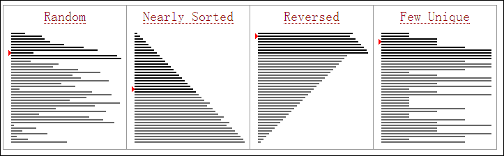

选择排序
- 原理
选择排序很简单，步骤如下：
- 首先在未排序序列中找到最小（大）元素，存放到排序序列的起始位置
- 然后，再从剩余未排序元素中继续寻找最小（大）元素，然后放到已排序序列的末尾
- 以此类推，直到所有元素均排序完毕。
之所以称之为选择排序，是因为每一次遍历未排序的序列我们总是从中选择出最小的元素。
下面是选择排序的动画演示

- 实现
1 | void selection_sort(int arr[], int len) { |
- 分析
下图分析了选择排序中每一次排序的过程，您可以对照图中右边的柱状图来看。

- 时间复杂度
选择排序的交换操作介于0和(n-1)次之间。选择排序的比较操作为n(n-1)/2次之间。选择排序的赋值操作介于0和3(n-1)次之间。
比较次数O(n^2)，比较次数与关键字的初始状态无关，总的比较次数 N=(n-1)+(n-2)+...+1=n(n-1)/2。交换次数O(n)，最好情况是，已经有序，交换0次；最坏情况是，逆序，交换n-1`次。交换次数比冒泡排序较少，由于交换所需CPU时间比比较所需的CPU时间多，n值较小时，选择排序比冒泡排序快。
原地操作几乎是选择排序的唯一优点，当空间复杂度要求较高时，可以考虑选择排序；实际适用的场合非常罕见。
冒泡排序
- 原理
冒泡排序是一种简单的排序算法，步骤如下：
- 比较相邻的元素。如果第一个比第二个大，就交换他们两个。
- 对每一对相邻元素作同样的工作，从开始第一对到结尾的最后一对。这步做完后，最后的元素会是最大的数。
- 针对所有的元素重复以上的步骤，除了最后一个。
- 持续每次对越来越少的元素重复上面的步骤，直到没有任何一对数字需要比较
冒泡排序对 n 个项目需要O(n^2)的比较次数，且可以原地排序。尽管这个算法是最简单了解和实现的排序算法之一，但它对于包含大量的元素的数列排序是很没有效率的。

- 实现
1 | #include <stdio.h> |
1 | int main() { |
- 分析
最坏时间复杂度 O(n^2)
最优时间复杂度 O(n)
平均时间复杂度 O(n^2)
空间复杂度 总共 O(n)，需要辅助空间 O(1)
插入排序
- 原理
插入排序也是一种比较直观的排序方式。可以以我们平常打扑克牌为例来说明，假设我们那在手上的牌都是排好序的，那么插入排序可以理解为我们每一次将摸到的牌，和手中的牌从左到右依次进行对比，如果找到合适的位置则直接插入。具体步骤：
- 从第一个元素开始，该元素可以认为已经被排序
- 取出下一个元素，在已经排序的元素序列中从后向前扫描
- 如果该元素小于前面的元素（已排序），则依次与前面元素进行比较如果小于则交换，直到找到大于该元素的就则停止；
- 如果该元素大于前面的元素（已排序），则重复步骤2
- 重复步骤2~4 直到所有元素都排好序 。
下面是插入排序的动画演示:

- 实现
1 | /// <summary> |

- 分析
插入排序在各种初始化条件下的排序效果如下：

- 时间复杂度
- 最好情况下,排序前对象已经按照要求的有序。比较次数(KCN):n−1 ; 移动次数(RMN):为0。则对应的时间复杂度为
O(n)。 - 最坏情况下,排序前对象为要求的顺序的反序。第i趟时第i个对象必须与前面i个对象都做排序码比较,并且每做1次比较就要做1次数据移动（具体可以从下面给出的代码中看出）。比较次数(KCN):1+2+…+(n-1) = n^2/2 ; 移动次数(RMN):为1+2+…+(n-1) = n^2/2。则对应的时间复杂度为
O(n^2)。 - 如果排序记录是随机的，那么根据概率相同的原则，在平均情况下的排序码比较次数和对象移动次数约为n^2/4，因此，直接插入排序的时间复杂度为
O(n^2)。
#快速排序
- 原理
快速排序使用分治法策略来把一个序列（list）分为两个子序列（sub-lists）。
步骤为：
- 从数列中挑出一个元素，称为”基准”（pivot），
- 重新排序数列，所有比基准值小的元素摆放在基准前面，所有比基准值大的元素摆在基准后面（相同的数可以到任一边）。在这个分区结束之后，该基准就处于数列的中间位置。这个称为分区（partition）操作。
- 递归地（recursively）把小于基准值元素的子数列和大于基准值元素的子数列排序。
递归到最底部时，数列的大小是零或一，也就是已经排序好了。这个算法一定会结束，因为在每次的迭代（iteration）中，它至少会把一个元素摆到它最后的位置去。
这里找到了YouTube上的一个动画演示效果，先看一下然后再来看代码：
- 实现：
1 | //快速排序 |
1 | int main(int argc, const char * argv[]) { |
- 分析
最坏时间复杂度 O(n^2)
最优时间复杂度 O(nlog n)
平均时间复杂度 O(nlog n)
归并排序
- 原理
归并排序也是采用分治法的思想。
递归法
- 将序列每相邻两个数字进行归并操作，形成 floor(n/2) 个序列，排序后每个序列包含两个元素
- 将上述序列再次归并，形成 floor(n/4) 个序列，每个序列包含四个元素
- 重复步骤2，直到所有元素排序完毕
动画解释：


- 实现
1 | void merge_sort_recursive(int arr[], int reg[], int start, int end) { |
1 | int main(int argc, const char * argv[]) { |
- 分析